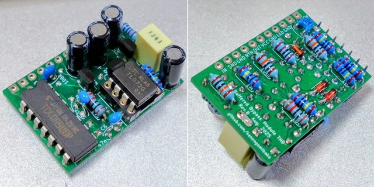
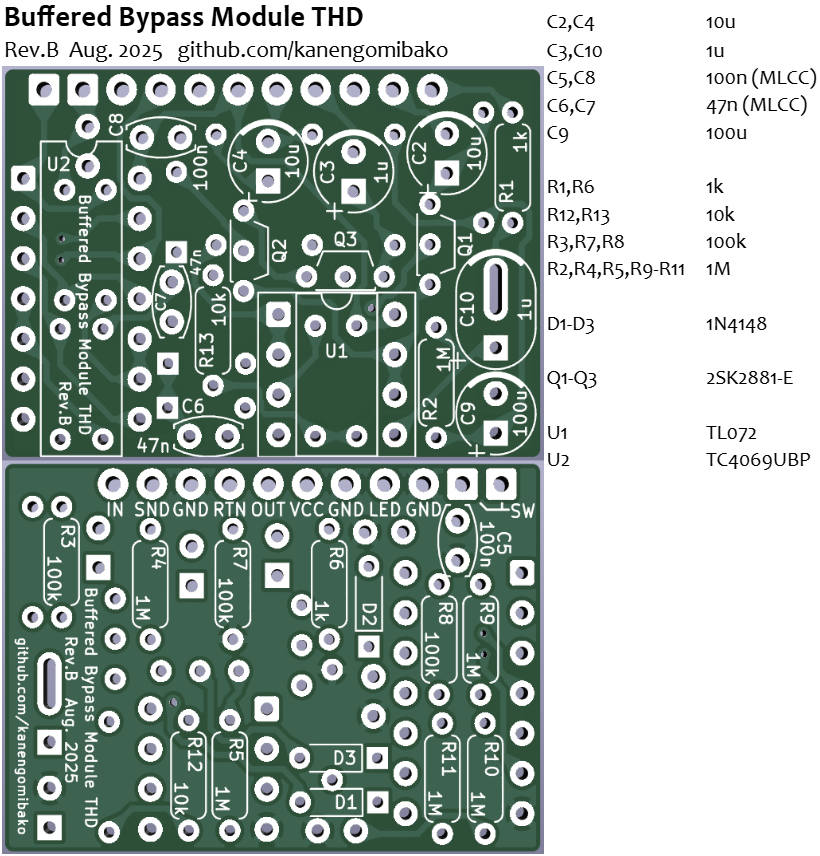
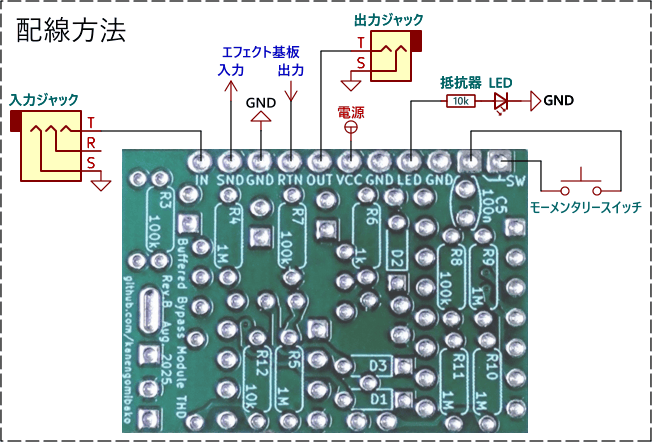

Buffered Bypass Module THD
2026年04月06日 カテゴリー：自作エフェクター（アナログ）

バッファードバイパス用のモジュールを製作しました。あまり需要はなさそうなので、小型バージョンの製作予定はありません。
回路図

オペアンプのバッファーです。極度にゲインが高いエフェクターの場合、発振するかもしれません（未確認）。スイッチ、LED以外の部品を秋月電子でそろえた場合の総額は322円です。
JFETには、Tube Screamerでも使われている2SK2881を使用しています。J113も使えますが、ピン配置が違うので足を曲げて取り付ける必要があります。
基板・配線


一部のコンデンサは、積層セラミックコンデンサ（MLCC）を使用します。リストにはありませんが、LED、LEDの電流制限用抵抗、モーメンタリースイッチが別途必要です。表裏両面に部品を配置することで省スペースとなっています。実装後の高さは約15mmです。